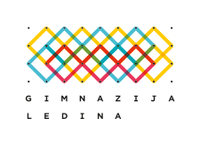

eMASA
test site
beep boop
1. Letnik
2. Letnik
3. Letnik
4. Letnik
Verified
Matejka Kuhar
Maja Lebar Bajec
Ana Likar
Helena Osterman
Irena Škulj
Ksenija Terglav Jakopin
Sandra Uranič
Veronika Babič
Sonja Kačar
Ina Kretič
Gorazd Jurman
Ruben Belina
Aleš Iršič
Natalija Novak
Nataša Ranđelović
Neža Umek Podgornik
Tatjana Ferder Brunšek
Ingrid Florjanc
Lea Nemec
Marjeta Kozmus
Betka Burger
Žan Ternik
Klara Antoni Jančič
Nika Cebin
Darko Košič
Špela Tršek
Mihaela Gregorc
Uroš Cotman
Maruša Dobljekar
Tatjana Levstek
Tamara Možina Artač
Rok Škufca
Nadja Gliha Olenik
Matejka Kuhar
Matejka Kuhar
Helena Osterman
Alenka Vojsk
Nina Levstik
Peter Prhavc
Lidija Srša
Bojana Petrin
Irena Ceklin Bačar
Tatjana Cvetko
Nina Levstik
Andreja Pavle Jurman
Bojana Petrin
Nina Prešern
Petra Špiletič Latin
Erika Berlan
Tomaž Šmid
Bojana Bizjan
Tomaž Karče
Miha Kobe
Nataša Korošec
Nataša Korošec
Urša Šilc Trček
Blanka Tomac
Boris Bovha
Boris Bovha
Arjana Marinič
Lea Nemec
Boris Pavliha
Roman Vogrinc
Vektorji in premice v dvodimenzionalni ravnini & ostali memi tega stoletja (in prejsnjega in predprejsnjega)
Vektorji
Memi
Premice
Dvodimenzionalne ravnine
Ravnine
Letosnje stoletje
Prof. Dobljekar
masa.kovac